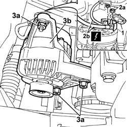

5530A10 alternator - r+r
- Path
- Procedures > 55 ELECTRICAL EQUIPMENT > 5530 CURRENT GENERATOR > 5530A alternator and components > 5530A10 alternator - r+r
- Kind
- repair procedure (removal / refitting; the operation number is the code)
- Applies to
- engines: 1.1, 1.2 8v; all production periods
- Interactive page
- https://sloeber94.github.io/elrnDB-fPnd/en/#/2752961
Applies to: engines: 1.1, 1.2 8v; all production periods
 Removing
Removing
 Refitting
Refitting1048A10 air cleaner filtering element - replace
1092B60 alternator drive belt - r + r
1. Open the wiring protective cover.
2. Undo the fixing nut (2a) and disconnect the alternator electrical wiring (2b).
 | Name | Connector |
|---|---|---|
2b | Starter' motor | A20A |
| Name | Connector |
|---|---|---|
2b | Starter' motor | A20B |
3. Undo the bolts (3a) and remove alternator (3b).

Applies to: engines: 1.1, 1.2 8v; all production periods
Refitting
RemovingFit the alternator in its seating and loosely tighten the fixing bolts.
Connect the alternator wiring and tighten the fixing nuts.
| Name | Connector |
|---|---|---|
- | Starter' motor | A20A |
| Name | Connector |
|---|---|---|
- | Starter' motor | A20B |
1092B60 alternator drive belt - r + r